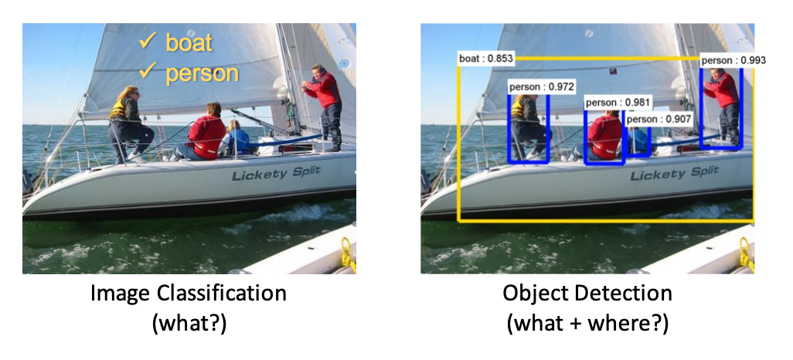
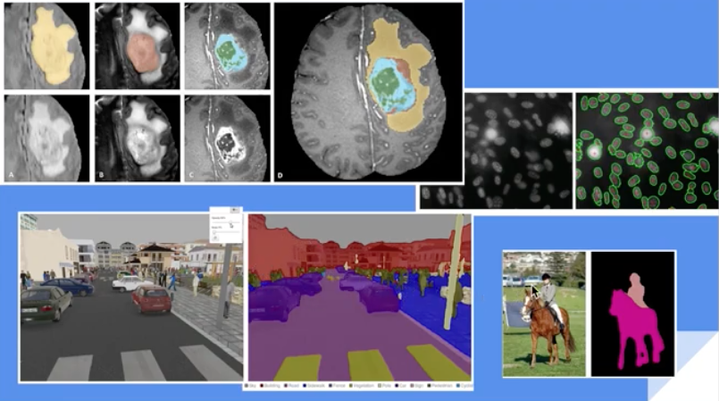
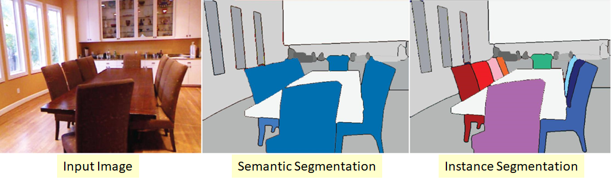
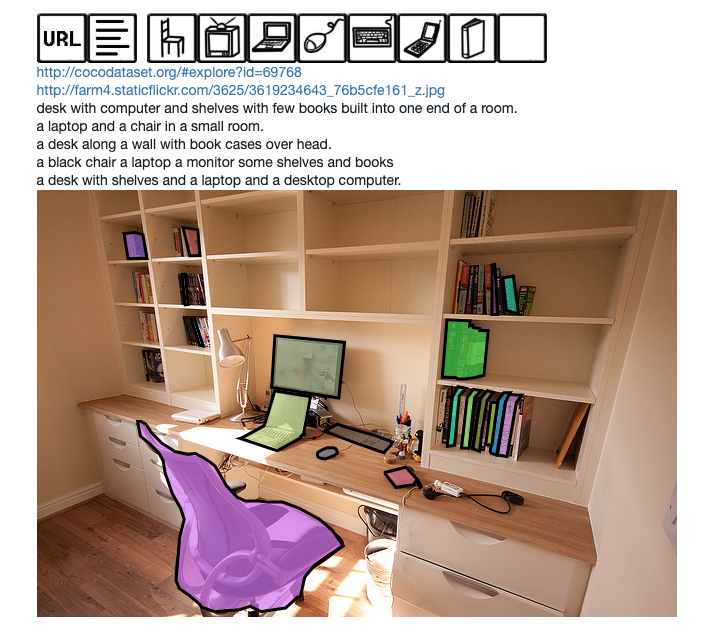

Introduction to Scene Understanding#
In the previous chapters we have treated the perception subsystem mainly from starting the first principles that govern supervised learning to the deep learning architectures that can be used in computer vision. Now we are synthesizing these algorithms to pipelines that can potentially allow us to decompose the scene into objects. As discussed in the Introduction to Convolutional Neural Networks, humans has a unique to interpret scenes based on their ability to infer (reason) what they dont see. This is the reason why scene understanding involves far more than just perception. In this chapter we will cover algorithms that allow us to, detect and segment objects in the scene.
Detect objects in an image.#
Object detection is demonstrated in this short video clip that shows the end result - placing bounding boxes around classes of interest.
The difference between classification and object detection is shown below.
 Difference between classification and detection
In classification we are given images (we can consider video clips as a sequence of images) and we are asked to produce the array of labels assigned to objects that are present in the frame. Typically in many datasets there is only one class and the images are cropped around the object. In localization, in addition to classification we are interested in locating (using for example a bounding box) each class in the frame. In object detection we are localizing multiple objects (some objects can be of the same class.) Localization is a regression problem fundamentally (although its implementation may move far away from a regression setting). Mathematically we have,
We try to come up with a function approximation to the true function \(p_{data}\) that maps the image \(x\) to the location of the bounding box \(y\). We
can uniquely represent the bounding box by the (x,y) coordinates of its upper left corner and its width and height \([x,y,w,h]\). Being a regression problem, as \(y\) is a floating point vector, we can use well known loss functions e.g. CE \(≡\) MSE where the error is the Euclidean distance between the coordinates of the true bounding box and the estimated bounding box.
However, the regression approach does not work well in practice and has been superceded by the algorithms described later in this chapter.
Semantic segmentation#
 Sementic Segmentation in medical, robotic and sports analytics applications
Both of these abilities enable the reflexive part of perception where the inference ends up being a classification or regression or search problem and in practice, depending on the algorithm, it can range from few ms to 100s of ms. Both of these reflexive inferences are essential parts of many mission critical almost real time applications such as robotics e.g. self driving cars.
There are other abilities that we need for scene understanding that don’t cover until later in this book. Our ability to recognize the attribute of uniqueness in an object and assign a symbol to it, is fundamental to our ability to reason very quickly at the symbolic level. At that level we can use a whole portfolio of symbolic inference algorithms developed over the last few decades. But before we reach this level we need to solve the supervised learning problem for the relatively narrow task of bounding and coloring objects. This needs annotated data and knowing what kind of data we have at our disposal is an essential skill.
Instance Segmentation#
 Instance Segmentation vs semantic segmentation
This is an even more complex problem that semantic segmentation that in addition to need to color differently the different instances of the same class in the image.
Datasets for computer vision tasks#
COCO#
 Typical example for Detection, Semantic Segmentation, and Image Captioning Tasks
After its publication by Microsoft, the COCO dataset has become the reference dataset to train models in perception tasks and it is constantly evolving through yearly competitions. The competitions are challenging as compared to earlier ones (e.g. VOC) (see performance section) since many objects are small. COCO’s 330K images are annotated with
80 object classes. These are the so-called thing classes (person, car, elephant, …).
91 stuff classes. These are the co-called stuff classes (sky, grass, wall, …). Stuff classes cover the majority of the pixels in COCO (~66%.). Stuff classes are important as they allow to explain important aspects of an image, including scene type, which thing classes are likely to be present and their location (through contextual reasoning), physical attributes, material types and geometric properties of the scene.
5 captions per image
Keypoints for the “person” class
Common perception tasks that the dataset can be used for, include:
Detection Task: Object detection and semantic segmentation of thing classes.
Stuff Segmentation Task: Semantic segmentation of stuff classes.
Keypoints Task: Localization of person’s keypoints (sparse skeletal points).
DensePose Task: Localization of people’s dense keypoints, mapping all human pixels to a 3D surface of the human body.
Panoptic Segmentation Task: Scene segmentation, unifying semantic and instance segmentation tasks. Task is across thing and stuff classes.
Image Captioning Task: Describing with natural language text the image. This task ended in 2015. Image captioning is very important though and other datasets exists to supplement the curated COCO captions.
Even in a world with so much data, the curated available datasets that can be used to train models are by no means enough to solve AI problems in any domain.
Firstly, datasets are geared towards competitions that supposedly can advance the science but in many instances leader boards become “academic exercises” where 0.1% mean accuracy improvement can win the competition but definitely does not progress AI. The double digit improvements can and these discoveries create clusters of implementations and publications around them that fine tune them. One of these discoveries is the RCNN architecture that advanced the accuracy metric by almost 30%.
Secondly, the scene understanding problems that AI engineers will face in the field, e.g. in industrial automation or drug discovery, involve domain specific classes of objects. Although we cant directly use curated datasets, engineers can do transfer learning, as shown in this section, where a dataset is used to train a model for a given task whose weights can be reused to train a model for fairly similar task.